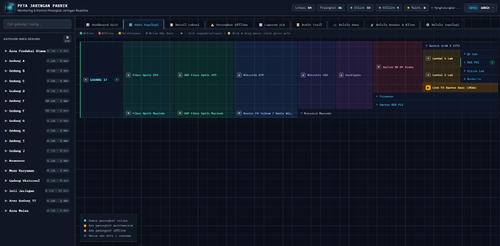
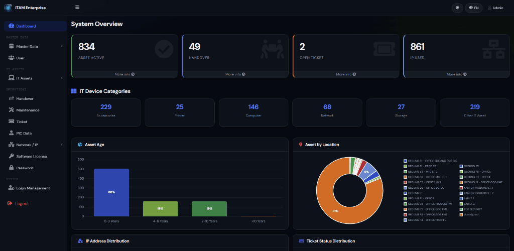
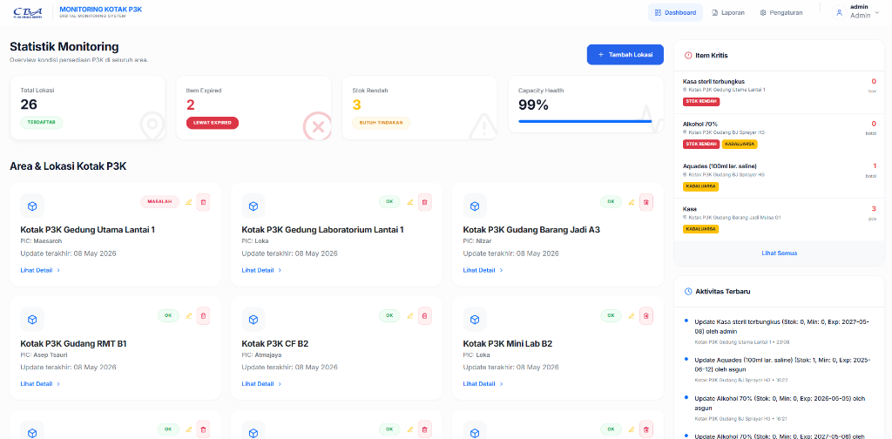
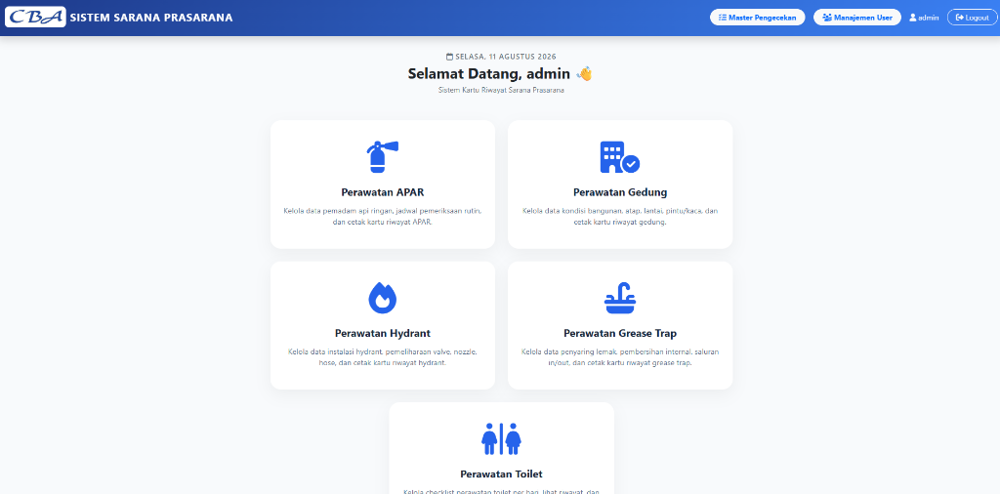
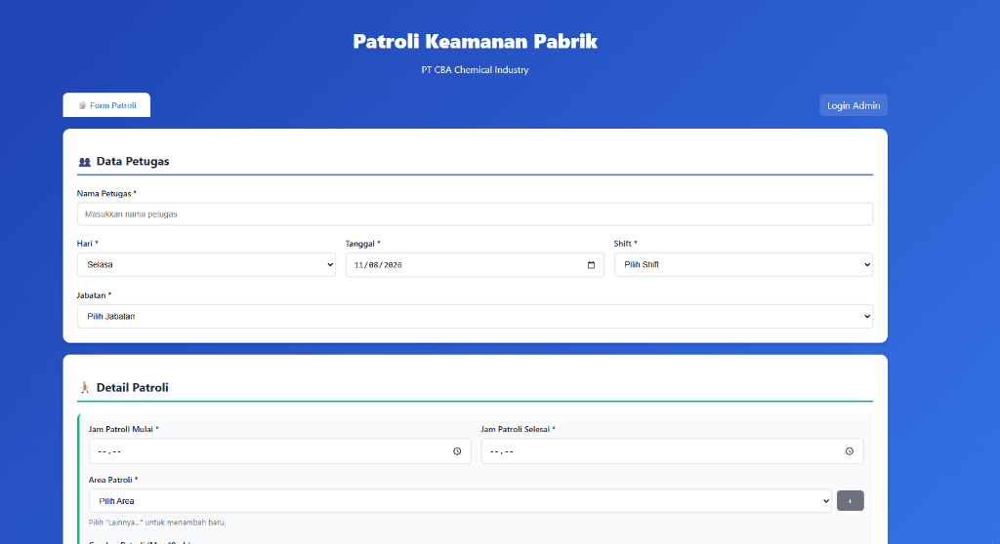
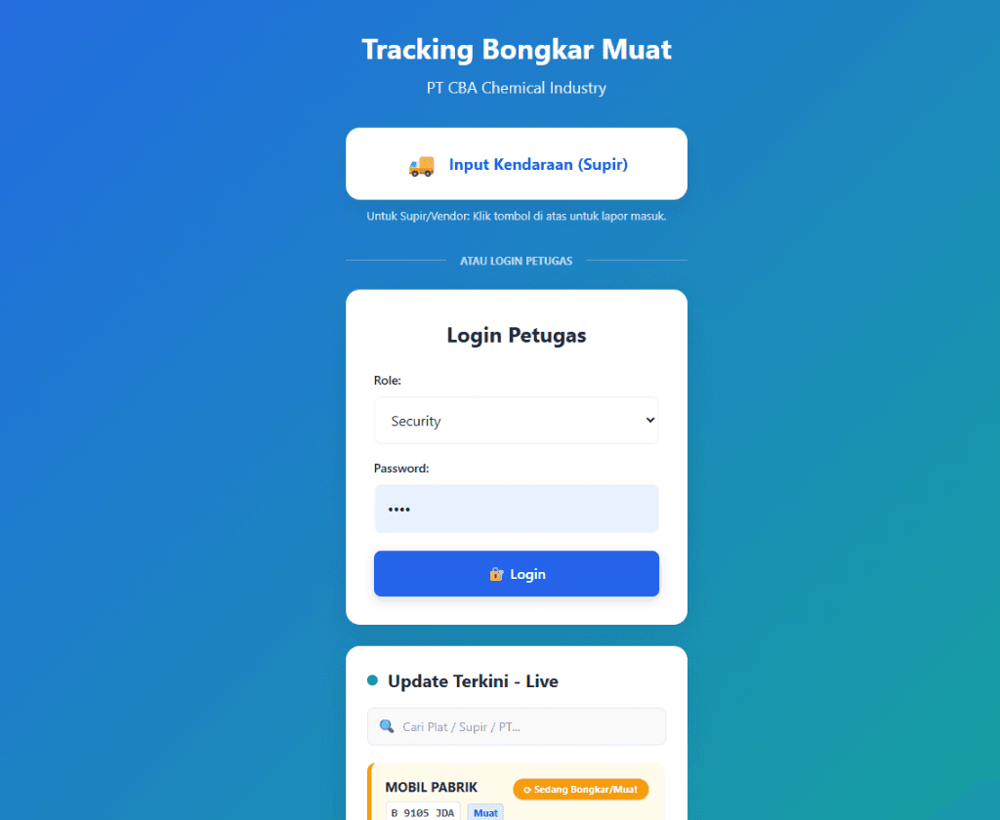
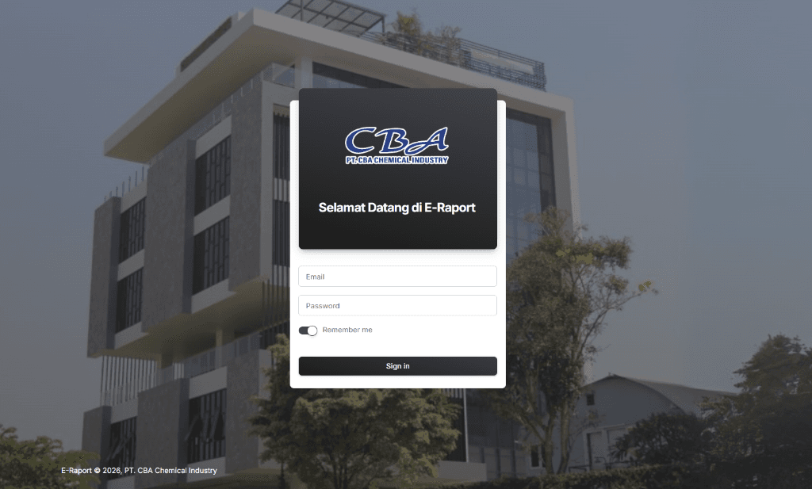
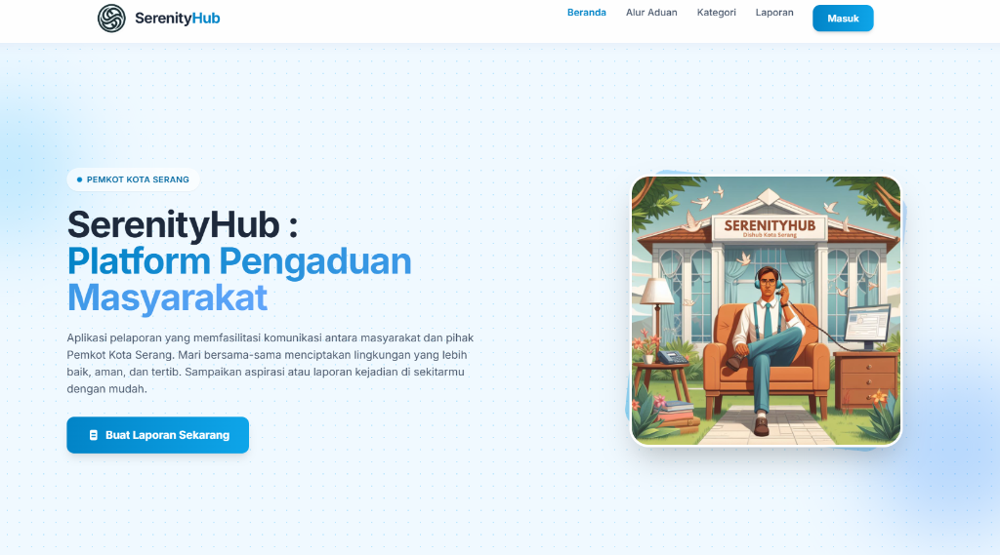
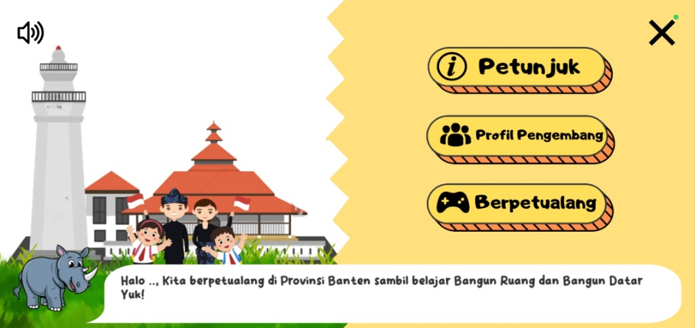

Featured Projects
Kumpulan proyek aplikasi sistem industri, web platforms, dan mobile game development yang telah saya bangun.

Factory Network Control System
Aplikasi monitoring & kontrol perangkat jaringan pabrik berbasis web (LAN). Memantau topologi dan kondisi perangkat jaringan secara real-time, grafik SLA, serta sistem alert otomatis.

IT Asset Management (ITAM) Enterprise
Sistem Manajemen Aset IT & Helpdesk komprehensif berbasis Laravel 12. Membantu pelacakan aset IT, alokasi IP address, manajemen lisensi software, serta operasional layanan ticketing helpdesk.

P3K Digital Monitoring System
Solusi manajemen inventaris cerdas yang mentransformasi pemantauan kotak P3K konvensional di seluruh area pabrik menjadi platform digital yang efisien, transparan, dan akurat.

Sistem Sarana Prasarana
Aplikasi web internal perusahaan untuk memantau dan mencatat pemeliharaan fasilitas serta infrastruktur pabrik. Memudahkan tim maintenance mencatat inspeksi, kondisi aset, dan mencetak kartu riwayat pemeliharaan secara digital.

Patroli Keamanan Pabrik
Sistem pencatatan log patroli keamanan terpusat. Petugas mencatat jadwal shift, rute patroli, timestamp, dan laporan kejadian yang dilengkapi bukti foto serta tanda tangan digital.

Tracking Bongkar Muat
Aplikasi pelacakan logistik real-time untuk mengonsolidasi dan mengoptimalkan alur kerja kendaraan di pabrik. Memantau durasi setiap tahapan dari gate check-in hingga pemuatan barang secara transparan.

E-Raport System (Kinerja Karyawan)
Sistem pelacakan kinerja karyawan HR yang mengelola kehadiran, pengajuan cuti, keterlambatan, riwayat training, serta evaluasi berkala dengan fitur ekspor laporan resmi.

Esthetic Cafe - Food Ordering Platform
Platform pemesanan makanan berbasis web dengan fitur live order tracking dan admin panel manajemen menu, memungkinkan pelanggan memesan secara mandiri tanpa pelayanan manual.

SerenityHub - Website Pengaduan Kota Serang
Platform pengaduan publik yang dibangun bekerja sama dengan Pemerintah Kota Serang. Warga dapat mengirim laporan, melacak status penanganan, dan berkomunikasi dengan dinas terkait.

BBQ Al-Kahfi Serang - Company Profile
Website company profile yang modern, responsif, dan mobile-first, dirancang untuk meningkatkan kredibilitas brand dan menyajikan navigasi yang intuitif.

Petualangan Barudak - Ethnomathematics Edu-Game
Game edukasi Android interaktif yang mengajarkan konsep geometri melalui kebudayaan lokal Banten. Dipublikasikan secara resmi dalam Histogram: Jurnal Pendidikan Matematika (2024).